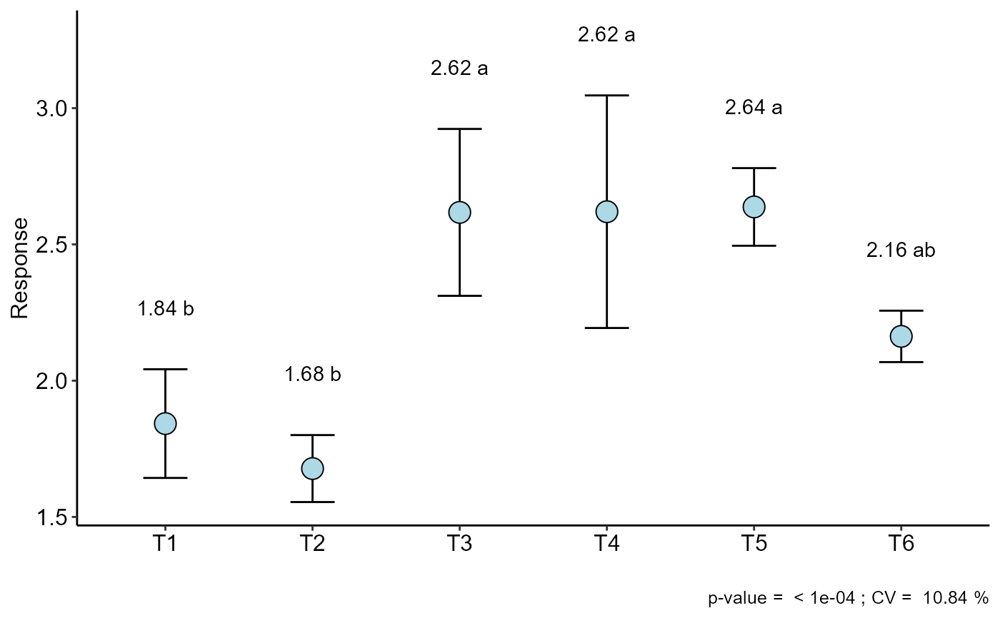
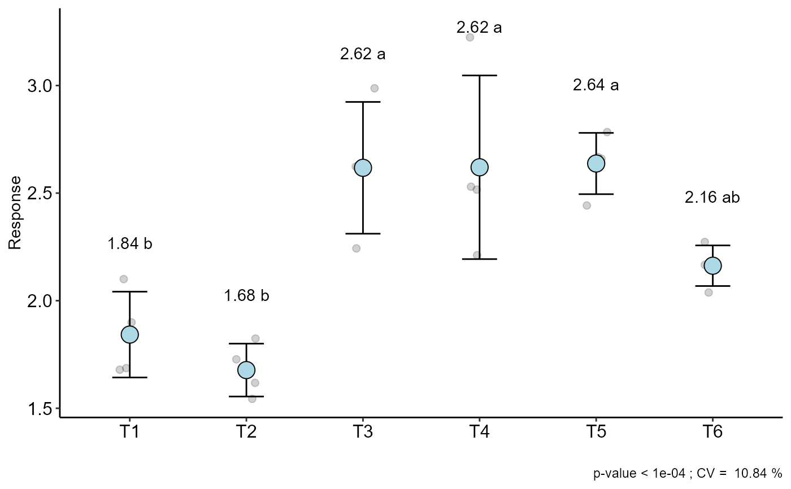

Graph: Column, box or segment chart with observations
plot_jitter.RdThe function performs the construction of graphs of boxes, columns or segments with all the observations represented in the graph.
plot_jitter(model)
Arguments
| model | DIC, DBC or DQL object |
|---|
Value
Returns with graph of boxes, columns or segments with all the observations represented in the graph.
Author
Gabriel Danilo Shimizu, shimizu@uel.br
Leandro Simoes Azeredo Goncalves
Rodrigo Yudi Palhaci Marubayashi
Examples
#> #> ----------------------------------------------------------------- #> Normality of errors #> ----------------------------------------------------------------- #> Method Statistic p.value #> Shapiro-Wilk normality test(W) 0.9448293 0.2087967 #>#> As the calculated p-value is greater than the 5% significance level, hypothesis H0 is not rejected. Therefore, errors can be considered normal#> #> ----------------------------------------------------------------- #> Homogeneity of Variances #> ----------------------------------------------------------------- #> Method Statistic p.value #> Bartlett test(Bartlett's K-squared) 8.568274 0.1275737 #>#> As the calculated p-value is greater than the 5% significance level,hypothesis H0 is not rejected. Therefore, the variances can be considered homogeneous#> #> ----------------------------------------------------------------- #> Independence from errors #> ----------------------------------------------------------------- #> Method Statistic p.value #> Durbin-Watson test(DW) 2.104821 0.1924474 #>#> As the calculated p-value is greater than the 5% significance level, hypothesis H0 is not rejected. Therefore, errors can be considered independent#> #> ----------------------------------------------------------------- #> Additional Information #> ----------------------------------------------------------------- #> #> CV (%) = 10.84 #> R-squared = 0.92 #> Mean = 2.2596 #> Median = 2.225 #> Possible outliers = No discrepant point #> #> ----------------------------------------------------------------- #> Analysis of Variance #> ----------------------------------------------------------------- #> Df Sum Sq Mean.Sq F value Pr(F) #> trat 5 3.692121 0.73842417 12.31191 2.723541e-05 #> Residuals 18 1.079575 0.05997639 #> #>#> As the calculated p-value, it is less than the 5% significance level.The hypothesis H0 of equality of means is rejected. Therefore, at least two treatments differ#> #> #> ----------------------------------------------------------------- #> Multiple Comparison Test #> ----------------------------------------------------------------- #> resp groups #> T5 2.6375 a #> T4 2.6200 a #> T3 2.6175 a #> T6 2.1625 ab #> T1 1.8425 b #> T2 1.6775 b #>#>plot_jitter(a)